Hello, my name is Asad. Today, I'm presenting something I worked on during the 2nd semester of the 2022-23 school year. This is a football simulator game, centered around strategy and statistics. In this immersive experience, players are challenged with the task of assembling the ultimate team of footballers within a limited budgetary constraint (£850). Each footballer's quality is reflected in his price, with higher-rated players costing more. Once the team has been meticulously crafted, players dive into a tournament featuring 128 teams. Among them, 127 teams are dynamically generated, each employing a unique formation and the best possible players from their assigned pool.
How did I get this idea? Well, I created a text-based football simulator in the past (my 1st semester at uni). It was my first real coding project, and I loved every minute of it, because A) I love football, B) I like coding, and C) I really like statistics, game theory, decision trees, etc. However, the quality of the code was quite poor. For example, look below at the code I used to validate a player's selection (in these 2 instances, I was checking if the input somewhat resembled Timo Werner or Raul Jimenez):
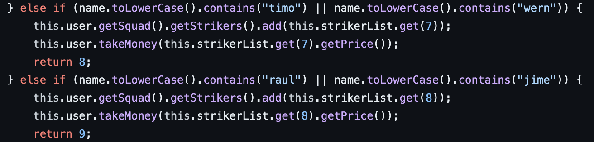🙈 This is why algorithms are important. Had I learned about tries/prefix trees, I would've avoided writing 600+ lines of poor code like that (yes, I did that for every single player). Thankfully, having taken multiple classes on algorithms since, and having done my own independent study of algorithms, I now know the way. I actually utilised tries heavily in another project I worked on this semester, but I will save that chat for a later github.io page. Regardless, I appreciate the efforts and zeal of my past self, as without this past work, I wouldn't have been able to complete this massively superior project.
In the words of esteemed artist Prodigy (rest in peace), let me start from the beginning, at the top of the list. To start, I wanted to get historical lineups from the past 5 years of all the top leagues (Bundesliga, Premier League, Serie A, Ligue 1, and La Liga), and utilise this information via deep learning to predict football matches, given 2 random teams. However, I needed something a bit extra to assign a certain quality value to a team. Unfortunately, there's nothing in these kinds of records that can singlehandedly measure a team's true quality. At first thought, scorelines could be a valid measure, but that's not always the case. For example, look at the image below:
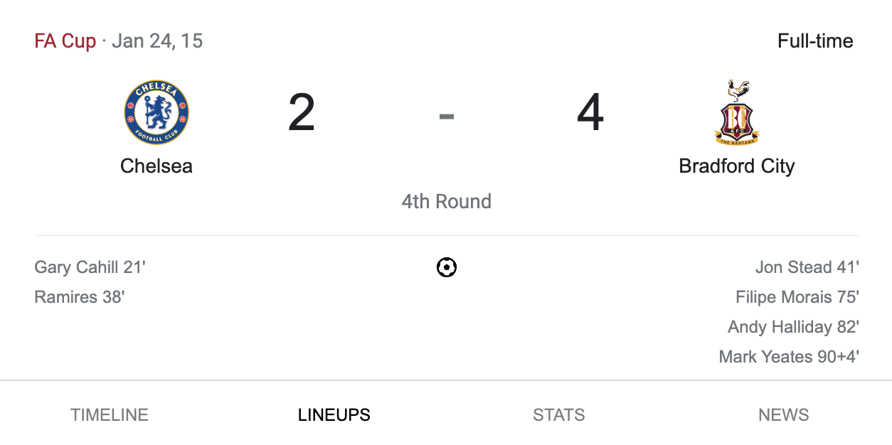Okay, so two teams played each other in a tournament, with one ultimately staging an incredible comeback from 2-0 down, away from home, to win 4-2. Big deal. Impressive, but this happens fairly often in sports. But, at the time, Bradford City were in the 3rd division of English football, where they ultimately finished 7th place (and they are now in the 4th division). Chelsea, on the other hand, were in the 1st division (Premier League) and top of the table at the time, ultimately winning the league in dominant fashion. Additionally, they fielded the team below:
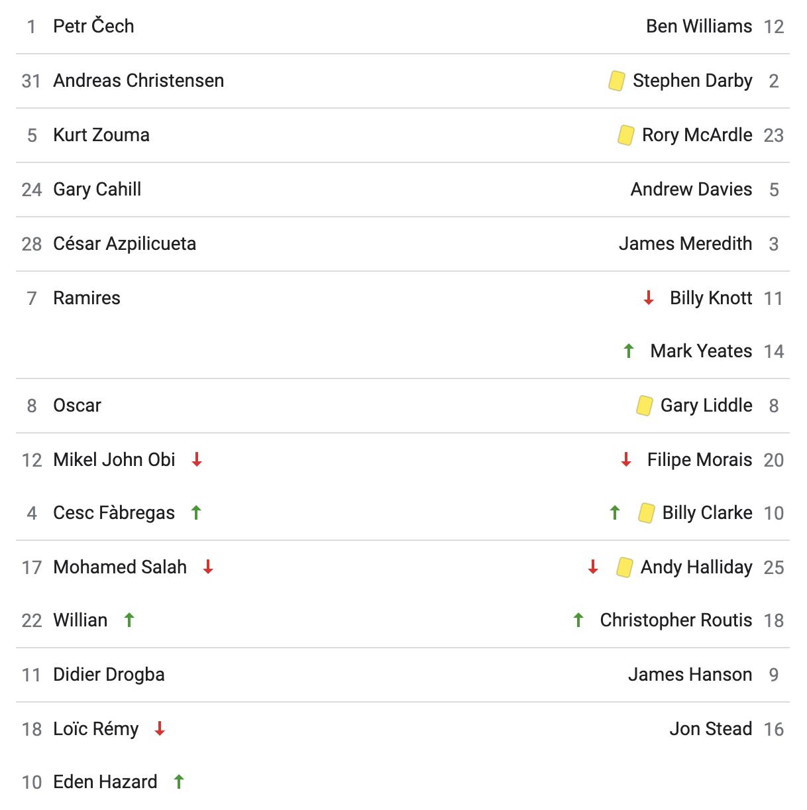They had 3 world-class players on the pitch (Hazard, Cesc, Azpilicueta), along with various other quality players (Ramires, Oscar, Remy, Willian, Cahill). Even the likes of Salah and Zouma, both of whom were fairly underwhelming for Chelsea (to be fair to Zouma, he suffered an ACL injury early on during his time there), have had fantastic careers after they've left the club. Salah has established himself as (arguably) Liverpool's best ever player, amongst the likes of Dalglish, Liddell, Rush, and Jay Spearing, whilst Zouma is currently West Ham's best defender. Point is, they had quality all over the park, and they had enough firepower to smash Bradford 4 or 5 nil.
But, this is football, and these shock results happen fairly often. So we cannot use them, or shots on target, or possession, or any of these other (fairly) arbitrary statistics to measure a team's quality. Instead, I decided to use FIFA ratings for individual players and map them to historical match data to correlate shots, possession, fouls, and goals with the quality of a side. I downloaded some CSV sets off of Kaggle for the past 9 FIFA games.
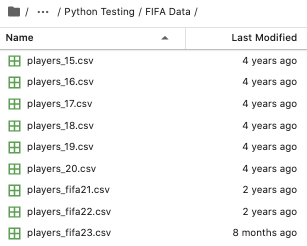For the lineup information, I used api-football.com. Basically, I used the API to get fixtures from the 15-16 season onward, matching the FIFA data. From the fixtures, I collected the stats associated with each individual match (e.g. shots on target, fouls, goals, etc.), but I had to make separate API calls to each fixture in order to collect the lineups associated with each match. I then mapped the player ratings from the FIFA CSVs to the lineups. Firstly, this was quite a challenge, because I imported 2 sets of CSVs. The first set had players' full names (e.g. instead of Cristiano Ronaldo, it was Cristiano Ronaldo dos Santos Aveiro), whilst the second set had players' "colloquial" names (e.g. the reverse). So, I created a dictionary/JSON file mapping these two sets of names to one another to ensure a seamless mapping of ratings to line-ups.
Secondly, FIFA player ratings can vary widely through the years, especially across the span of 9 FIFA games. For example, below is Jerome Boateng:
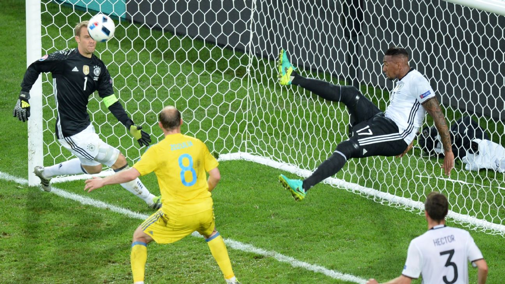On his day, he was a magnificent player. In FIFA 15, he was the highest-rated centre-half in the game, and rightfully so. In FIFA 16, he was the second highest-rated, just behind Thiago Silva, who was only 1 point above him. Then, in FIFA 17, he was the highest-rated centre-half in the game, with an incredibly rare rating of 90. Guy was incredible in his prime. Quick, strong, fantastic at playing out from the back, and a very, very good leader.
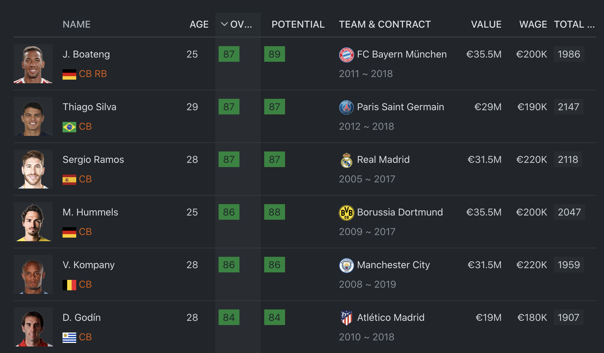Unfortunately, nowadays, he's a bit crap. Having suffered serious injuries during his last few seasons at Bayern Munich, starting in the 2016-17 season, he began to lose his pace and athleticism. In the 2018-19 season, he eventually fell behind Mats Hummels and Nicklas Sule in the pecking order. He also had a disastrous 2018 World Cup.
He had a bit of a renaissance year in the 2019-2020 season, as Bayern Munich won the treble, but since then, he's just not been the same player. He's constantly cocking up in big matches, and Lyon are looking to get rid of him.
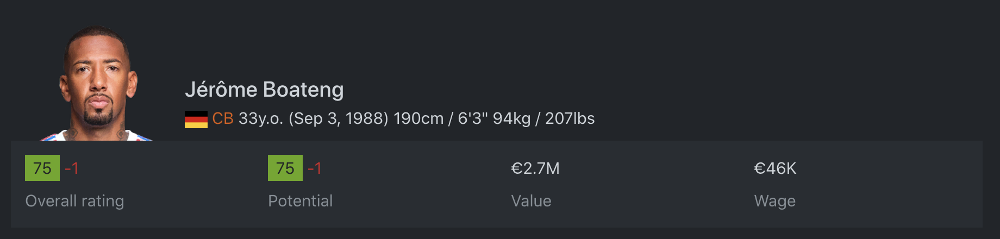The reason I've just written all of that is not because I like Jerome Boateng. He played for Manchester City, and he's generally not a good bloke in his private life, so no, I don't like him. The reason I've just went on this tangent about Boateng is because he has changed as a player through the years, in a bad way. If I am mapping ratings to Lyon matches, it is not fair that I map Boateng's FIFA 17 rating, when he played in the Bundesliga for Bayern Munich, to a Ligue 1 match in 2023. He doesn't perform like a 90-rated player anymore (no where near actually), so I can't just greedily take the first rating I see and defile the fixture with inaccurate data.
It is the same in reverse. N'Golo Kante has been one of the best midfielders in the world the past 6 years, but in FIFA 15, he started off with a lowly 72 overall (compared to his peak rating of 90 in FIFA 22). So I decided to average the ratings through the years. Perhaps a smarter idea would've been to create a separate dictionary for each player and assign each season his rating for that respective FIFA game, but I felt that was a bit over-the-top and dull. Plus, there'd be issues with players not in certain editions of FIFA. For example, Diego Costa was in every single FIFA game from 15 to 21, but since he played in the Brazilian league in the 2021-2022 season and part of the 2022-2023 season, he has not been in the past 2 games. Therefore, I just cracked on with the idea of averaging.
After I mapped the ratings of players to lineups and fixtures, things got much, much easier. Below is a table of sample data, for the 2018-19 Premier League season.
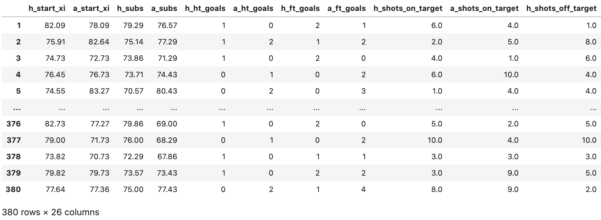It was class. I did this for England, France, Germany, Italy, and Spain (and a couple other lesser known leagues), each for 5 separate seasons, and ended up with a dataframe of over 26k+ rows. I also separated the ratings based on position. See the table below for fixtures where the away team's quality was much, much higher than that of the home team's.
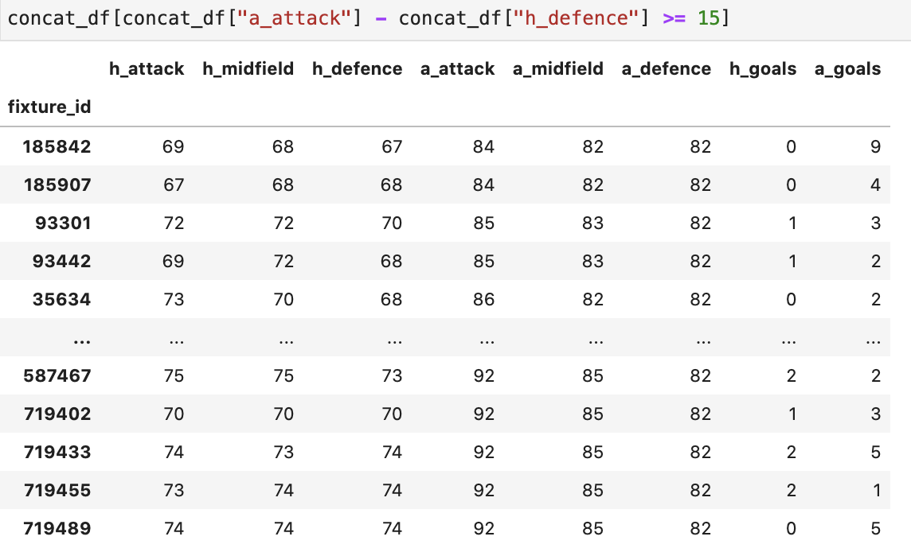As you can see, it's just pure domination. In the first row, the dominant team won by 9 goals. Wow. In the bottom, they won by 5. But in fixture_id 719455, it seems that the dominant team bottled it. They lost 2-1 with a 92-rated forward line. Quite a poor showing for them, but in the vast majority of the rows, the dominant team leathered the inferior team.
From then on, I knew having one model wouldn't be good enough for an accurate simulator. Football is random. 99 times out of 100, Manchester City would demolish Burton Albion. But, on that 1 sole occasion, Burton Albion would do enough to hold them to a 0-0 draw at the Etihad. That's just the way the sport is. Pretty much every other time though, it would end up like it did the last time these played one another.
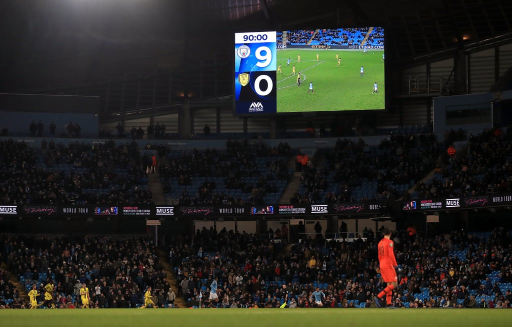Based on the axiom above, multiple models were needed. And, knowing what I know about football, I've come to the conclusion that there are 4 types of fixtures:
In terms of frequency, scenarios 1 and 3 are perhaps the most common in world football, likely covering 70% of fixtures a week in any given league. Scenario 4 does happen fairly often as well, but not as often as the other two. And scenario 2 is just peak. It's something that happens infrequently, and when it does happen, the entire footballing world laughs. Examples of that would be Everton smashing City 4-0 a few years back, Chelsea getting bossed by Bradford City (as seen earlier), and Manchester United taking a 7-0 hiding off Liverpool a few months ago (😢). Anyway, I created a normal feedforward neural network class, a custom class to fit the big dataframe I generated, and I cracked on.
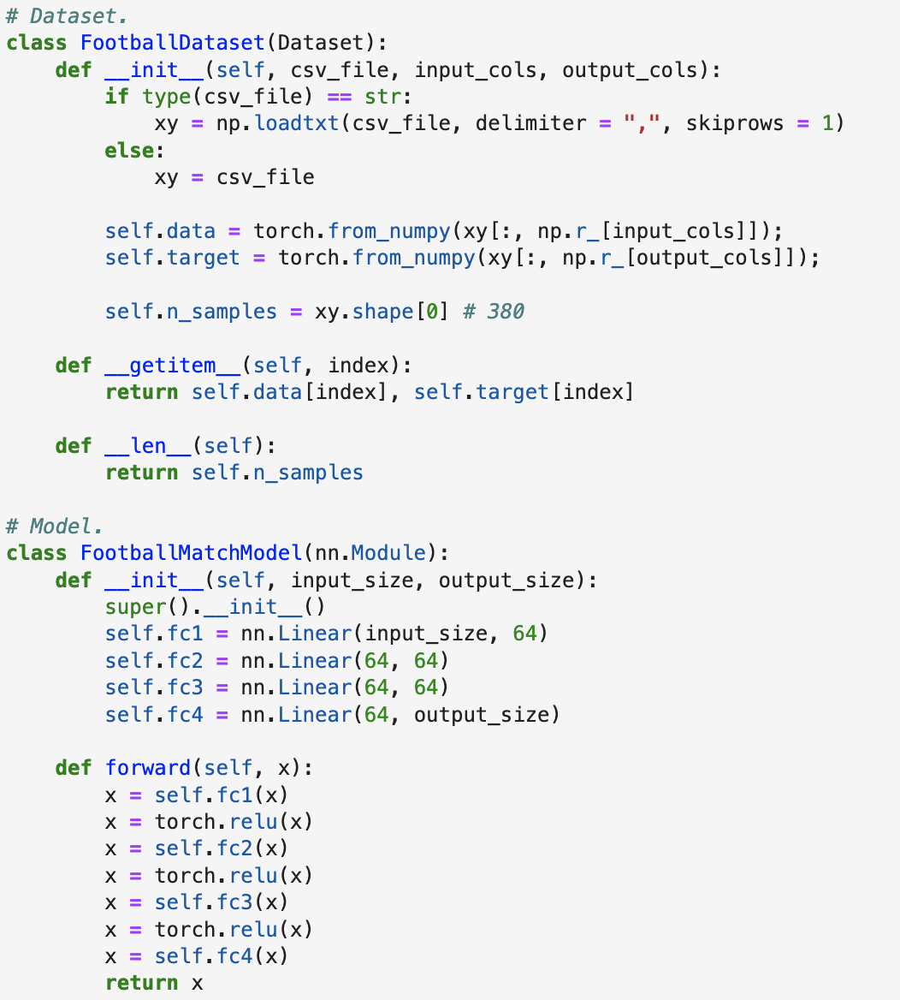I then trained 4.5 separate models based on the types of fixtures above. I say 4.5 because I added another model that is somewhat inaccurate (e.g. Burnley 2 - 2 Manchester City), but not completely out of the realm of possibility. Now, I was done with the scorelines. Thank goodness for that. Onto the match stats.
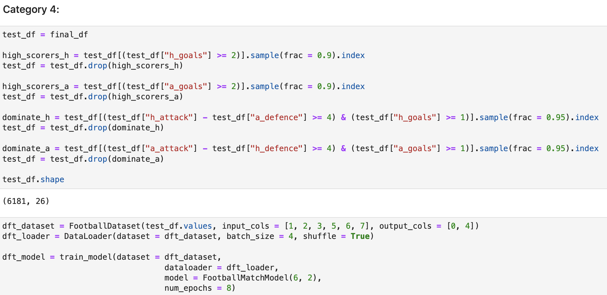